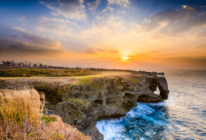
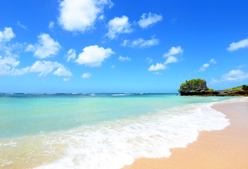

해외패키지
[오키나와3일] 따스한 햇살 가득 오키나와, 진정한 휴양을 꿈꾼다면 바로 이곳!
여행상품 핵심정보
- 

- 
여행 주요 일정
- 여행 기간
- 2박 3일
- 이용 교통
-
대한항공KE907
한국출발2021.11.01 (월) 14:05
현지도착2021.11.01 (월) 16:30
KE908현지출발2021.11.03 (월) 17:30
현지도착2021.11.03 (월) 19:55
- 방문 도시
- 인천 → 오키나와 → 인천
- 예약 현황
- 예약 : 0석남은좌석 : 10석 (최소출발 15명)
상품 가격
| 구분 | 성인 | 아동(만 2세 ~ 만12세 미만) | 구분(만 2세 미만) |
|---|---|---|---|
| 기본상품가 | 1,299,000원 | 1,299,000원 | 300,000원 |
| 유류할증료 | 0원 | 0원 | 0원 |
| 총 상품가 | 1,299,000원 | 1,299,000원 | 300,000원 |
- 항공권 또는 항공권이 포함된 상품의 경우, 표시되는 상품요금은 세금 및 예상 유류할증료가 포함된 가격이며, 유류할증료는 유가 및 환율 등에 따라 변동될 수 있습니다.
- 아동/유아 기준은 항공사마다 상이하여, 예약 후 최종 확정됩니다.
포함/불포함/선택경비 정보
- 이용항공기 : 전일정 대한항공KE입니다.
- 포함비용 : 왕복항공료 + 각종TAX(공항세,전쟁보험료,국제관광여객세) + 일정표 상 식사 및 숙박 + 관광지입장료 + 해외여행자 보험(만79.6세 미만까지 가입가능) + 전용차량 등
- 유류할증료 : 유류할증료는 국제선 유가 비용의 환율 변동에 따라 기간별로 달라질 수 있으며 발권일 기준으로, 상품가 책정시보다 변동 되었을 경우 추가 지불 또는 인하 될 수 있음을 사전에 고지합니다.
- 숙박시설 : 하얏트 호텔(트윈룸/2인1실 기준)※3인1실 요청시: 비용추가 없이 정베드2개+엑스트라베드1개 배정됩니다.
- 해외여행자보험 포함 (하단 보험관련 항목 확인 必 확인 부탁드립니다.)※자세한 사항 기타사항 참조/규정에 따라 여행자보험 가입대상이 아닐 수 있으므로 약관 참고부탁드립니다.
- 가이드/기사 경비 : 1인 ￥3,000(엔)을 현지에서 지불하셔야 합니다. (성인/소아 동일적용)※ 가이드 경비는 필수사항 이며, 매너팁은 고객의 자율적 선택사항으로써 지불여부에 따른 불이익은 없습니다.
- 2일차 석식 불포함 (자유식)
- 싱글차지: 1인 여행시 독실(싱글룸) 사용하셔야 하며, 200,000원(전일정) 추가됩니다.
- 기타 개인경비 불포함 (엔화로 준비 바랍니다.)
| 여권 | 만료기간이 6개월 이상 남아 있어야 합니다. 예약 시 가급적 여권사본을 예약처에 전달 부탁드립니다. |
|---|---|
| 예약금 | 예약 후 3일 이내에 1인당 상품가의 10%씩 예약금을 예약하신 여행사에 입금 부탁 드립니다. |
| 항공권발권 | 빠른 발권 요청이 진행될 수 있으며, 발권을 못하는 경우, 항공좌석 불가 또는 운임이 상승 될 수 있습니다. |
| 항공스케쥴 | 항공 스케줄은 항공사의 사정에 따라 변경될 수 있습니다. 출/도착 스케줄은 해당 도시의 현지시간 기준입니다. |
| 상품가 | 상품가격은 예약 시점에 따라 상이할 수 있습니다. |
| 상품좌석 | 해당 상품은 같은 일정의 상품들과 항공좌석을 공유하므로 타 상품에서 좌석 사용 시 조기마감될 수 있습니다 |
| 호텔등급 | 일정표상에 표기된 호텔등급은 현지호텔로부터 받은 정보를 바탕으로 표기한 것 임을 알려드립니다. |
| 일정 | 일정표 상 기재된 관광지 상세 설명은 일반적인 설명이며 실제 관광일정과 차이가 있을 수 있습니다. |
| 관광지입장 | 내부 관람으로 표기된 입장지 외의 장소는 외부 관람으로 진행됩니다. |
| 국적 | 대한민국 국적이 아닌 경우 방문 국가의 비자관련 사항을 대사관에 확인해주시기 바랍니다. |
상품안내
여행일정
참고하세요여행 일정은 계약 체결 시 예상하지 못한 부득이한 사정 등이 발생하는 경우 여행자의 사전 동의를 거쳐 변경될 수 있음을 양지하여 주시기 바랍니다.
미팅 일시 및 장소
일시 : 2021년 11월 01일 12시 00분
장소 : 인천국제공항 1터미널 3층 출국장 14번 출구 앞(N카운터 옆 창측) 여행사카운터 38~42번 테이블
1일차2021.11.01(월)-인천/오키나와
인천출발
14:05
2021.11.01(월)

인천
[12:00] 인천국제공항 1터미널 미팅
※ 예약 인원에 따라서 현지 가이드로 진행될 수 있습니다.[14:05/KE907] 인천 국제 공항 출발 (소요시간 - 약 2시간 15분 / 기내식 미제공)
오키나와
[16:30/TW271] 나하 국제공항 도착 및 입국수속
오키나와 최대 번화가, 기적의 1마일 국제거리
국제거리


나하에서 가장 번화한 거리로 약 1.6km 일직선으로 뻗은 거리에 오키나와 수호신과 토산품을 판매하는 상점들이 많이 있으며,레스토랑, 쇼핑센터, 호텔 등이 모여 있다. 이곳은 2차 세계대전 당시 미군의 공습으로 폐허가 되었으나 급속한 성장으로 기적의 1마일이라고도 불린다.
석식 후 호텔로 이동 체크인 및 휴식
하얏트 리젠시 나하 오키나와


나하 시에 자리한 하얏트 리젠시 나하 오키나와는 숙박, 식사, 미팅 및 휴식을 취할 수 있는 인상 깊은 지역 랜드마크이다. 객실 내 무료 와이파이(Wi-Fi)가 완비되어 있다. 내부에는 수영장과 함께 피트니스센터가 있다. 각 객실에 슬리퍼, 샤워 시설, 헤어드라이어 등이 구비된 욕실이 있다. 나하 공항에서 차편으로 20분 거리이다.
[석식] 현지식(웰빙뷔페)
2일차2021.11.02(화) - 오키나와
오키나와
호텔 조식 후
해양박람회기념공원(츄라우미 수족관)
EXPO 해양공원

새하얀 모래시장과 새파란 바다의 콘트라스트가 일품이며, 눈앞에는 이에지마 섬이 위치한 인공해변과 점프 및 독특한 행동으로 관광객들을 즐겁게 해주는 귀여운 돌고래들의 쇼. 세계적 규모를 자랑하는 츄라우미 수족관은 고래상어,귀가오리등 쉽게 볼 수 없는 다양한 열대어 등을 접할 수 있어 남녀노소 즐겨 찾는 명소이다.
만좌모
만좌모

높이200m의 석회암 절벽위에 천연잔디가 자라난 코끼리 모양의 절벽이다. 명칭은 '만인이 앉아도 충분한 잔디 벌판'이라는 뜻에서 류큐왕조 시절 붙여진 이름이다. 코발트빛을 내는 탁트인 바다와 산호초가 만들어 내는 절경을 만끽 할 수 있다.
아메리칸 빌리지
아메리칸 빌리지
오키나와 중부 차탄초 미하마에 위치해 있으며, 선셋이 아름다운 선셋비치로 부터 불어오는 상쾌한 바닷바람을 맞으면서 쇼핑이나 레져를 즐길 수 있는 오키나와 인기 no1. 명소이다. 대관람차가 테마파크 분위기를 내는곳으로 대형 마트 이온몰을 비롯해 상점들이 모여 있어 쇼핑과 관광에 편리하다.
오키나와 최대 쇼핑몰 파르코시티 자유관광 (석식 자유식 진행)
석식 후 호텔로 이동 체크인 및 휴식
하얏트 리젠시 나하 오키나와
나하 시에 자리한 하얏트 리젠시 나하 오키나와는 숙박, 식사, 미팅 및 휴식을 취할 수 있는 인상 깊은 지역 랜드마크이다. 객실 내 무료 와이파이(Wi-Fi)가 완비되어 있다. 내부에는 수영장과 함께 피트니스센터가 있다. 각 객실에 슬리퍼, 샤워 시설, 헤어드라이어 등이 구비된 욕실이 있다. 나하 공항에서 차편으로 20분 거리이다.
[석식] 현지식(웰빙뷔페)
[중식]현지식(토반야키)
[석식]자유식(불포함)
3일차2021.11.03(수) - 오키나와/인천
오키나와
호텔 조식 및 체크아웃 후 이동
치넨미사키
치넨미사키

오키나와 남동부 해안 끝에 180도로 펼쳐지는 아름다운 바다와 푸른 하늘의 조화가 돋보이는 공원이다. 일출명소로 유명하며, 밤이되면 별을 조망할 수 있을정도로 맑은 날씨를 자랑하는 곳이며, 코발드 빛 바다와 자연 절경이 아름답다. 멀리 구다카 섬, 코마카 섬등 섬이 보이며 세이와우타키 바로 옆에 위치하고 있다.
마사히로 주조 공장
마사히로 주조 공장


창업 130 여년의 마사히로 주조는 전통적인 제법을 지키면서 매일 절차 탁마 항상 양질의 아와모리를 생산하고 있다. '아와모리'라 하는 일본 오키나와식 소주 제조과정을 볼 수 있으며, 공장에서 생산하는 다양한 제품은 물론이고, 무료 시음도 가능하다.
슈리성
슈리성


오키나와의 옛 이름인 류큐왕조의 정치,외교,문화의 중심으로서 위용을 자랑하는 거성(구스쿠)으로 세계문화유산에 등재 되었으며, 일본과 중국의 융합된 건축양식을 볼 수 있는 것이 특징이다. 성터 곳곳을 둘러보며 안내센터에서 받은 스탬프랠리를 체험해볼 수 있고, 돌길로 만들어진 이시타타미길은 힐링을 느끼게 해준다.
우미카지테라스
우미카지테라스

계단식으로 이루어진 상업시설로, 하얗고 아기자기한 샵들과 카페등의 각종 가게가 있고 야자수가 어우러진 지중해 느낌으로 오키나와의 산토리니라고 불리운다. 나하공항과 인접한 곳에 위치해 비행기들의 출도착 모습을 가까이에서 볼 수 있다.
면세점 쇼핑 1회 방문
[17:30/KE908] 나하 국제공항 출발
인천
[19:55/KE908] 인천 국제공항 도착
인천출발
14:05
2021.11.01(월)
[석식] 현지식(웰빙뷔페)
[중식]현지식(토반야키)
[석식]자유식(불포함)
쇼핑
본 여행상품은 총 1회의 쇼핑일정이 포함되어 있습니다. 쇼핑 세부정보는 아래와 같습니다.
[쇼핑세부정보]
*쇼핑품목: 잡화
*쇼핑장소: 일본면세점
*소요시간: 약 40~60분
*환불여부: 가능
*해외여행시 US$600 초과로 구입한 물품에 대해서는 입국시 관세가 부과될 수 있습니다.
[쇼핑센터 물건 구입시 유의사항]
* 구매하신 물품의 교환 및 환불 처리는 물품 구매 후 14일 안에만 가능합니다.
* 물품의 이상으로 인한 교환 및 환불은 가능하나, 구매자의 단순변심 및 사용 흔적이 있는 물품 및 고객 부주의로 인한 물품의 파손과 분실은 교환 및 환불 불가합니다.
* 교환 및 환불 처리는 물품의 도착 시점으로부터 약 7일 ~ 최대 30일 정도가 소요될 수 있으며, 신용카드로 구매하셨을 경우 환불금액은 환율차에 의해 달라질 수 있습니다.
※ 고객님께서 쇼핑하신 물품에 대한 환불 및 교환 등은 고객서비스의 일환으로 대행해 드리고 있습니다만, 제품의 품질 및 환불, 교환에 대한 책임은 웨어투어에 없음을 알려드립니다.
관광지
국제거리
나하에서 가장 번화한 거리로 약 1.6km 일직선으로 뻗은 거리에 오키나와 수호신과 토산품을 판매하는 상점들이 많이 있으며,레스토랑, 쇼핑센터, 호텔 등이 모여 있다. 이곳은 2차 세계대전 당시 미군의 공습으로 폐허가 되었으나 급속한 성장으로 기적의 1마일이라고도 불린다.
EXPO 해양공원
새하얀 모래시장과 새파란 바다의 콘트라스트가 일품이며, 눈앞에는 이에지마 섬이 위치한 인공해변과 점프 및 독특한 행동으로 관광객들을 즐겁게 해주는 귀여운 돌고래들의 쇼. 세계적 규모를 자랑하는 츄라우미 수족관은 고래상어,귀가오리등 쉽게 볼 수 없는 다양한 열대어 등을 접할 수 있어 남녀노소 즐겨 찾는 명소이다.
만좌모
높이200m의 석회암 절벽위에 천연잔디가 자라난 코끼리 모양의 절벽이다. 명칭은 '만인이 앉아도 충분한 잔디 벌판'이라는 뜻에서 류큐왕조 시절 붙여진 이름이다. 코발트빛을 내는 탁트인 바다와 산호초가 만들어 내는 절경을 만끽 할 수 있다.
아메리칸 빌리지
오키나와 중부 차탄초 미하마에 위치해 있으며, 선셋이 아름다운 선셋비치로 부터 불어오는 상쾌한 바닷바람을 맞으면서 쇼핑이나 레져를 즐길 수 있는 오키나와 인기 no1. 명소이다. 대관람차가 테마파크 분위기를 내는곳으로 대형 마트 이온몰을 비롯해 상점들이 모여 있어 쇼핑과 관광에 편리하다.
치넨미사키
오키나와 남동부 해안 끝에 180도로 펼쳐지는 아름다운 바다와 푸른 하늘의 조화가 돋보이는 공원이다. 일출명소로 유명하며, 밤이되면 별을 조망할 수 있을정도로 맑은 날씨를 자랑하는 곳이며, 코발드 빛 바다와 자연 절경이 아름답다. 멀리 구다카 섬, 코마카 섬등 섬이 보이며 세이와우타키 바로 옆에 위치하고 있다.
마사히로 주조 공장
창업 130 여년의 마사히로 주조는 전통적인 제법을 지키면서 매일 절차 탁마 항상 양질의 아와모리를 생산하고 있다. '아와모리'라 하는 일본 오키나와식 소주 제조과정을 볼 수 있으며, 공장에서 생산하는 다양한 제품은 물론이고, 무료 시음도 가능하다.
슈리성
오키나와의 옛 이름인 류큐왕조의 정치,외교,문화의 중심으로서 위용을 자랑하는 거성(구스쿠)으로 세계문화유산에 등재 되었으며, 일본과 중국의 융합된 건축양식을 볼 수 있는 것이 특징이다. 성터 곳곳을 둘러보며 안내센터에서 받은 스탬프랠리를 체험해볼 수 있고, 돌길로 만들어진 이시타타미길은 힐링을 느끼게 해준다.
우미카지테리
계단식으로 이루어진 상업시설로, 하얗고 아기자기한 샵들과 카페 등의 각종 가게가 있고 야자수가 어우러진 지중해 느낌으로 오키나와의 산토리니라고 불리운다. 나하공항과 인접한 곳에 위치해 비행기들의 출도착 모습을 가까이에서 볼 수 있다.
숙소
하얏트 리젠시 나하 오키나와
나하 시에 자리한 하얏트 리젠시 나하 오키나와는 숙박, 식사, 미팅 및 휴식을 취할 수 있는 인상 깊은 지역 랜드마크이다. 객실 내 무료 와이파이(Wi-Fi)가 완비되어 있다. 내부에는 수영장과 함께 피트니스센터가 있다. 각 객실에 슬리퍼, 샤워 시설, 헤어드라이어 등이 구비된 욕실이 있다. 나하 공항에서 차편으로 20분 거리이다.
약관/취소수수료
[약관]
본 상품의 예약과 취소는 [국외여행 표준약관]이 적용 됩니다./p>
[취소수수료]
- 여행자 및 여행사의 계약 해제 시
- - 여행개시 30일전까지 취소 요청시 - 계약금 환불
- - 여행출발일 20일전까지 취소 요청시 - 여행요금의 10% 배상
- - 여행출발일 19~10일전까지 취소 요청시 - 여행요금의 15% 배상
- - 여행출발일 9~8일전까지 취소 요청시 - 여행요금의 20% 배상
- - 여행출발일 7~1일전까지 취소 요청시 - 여행요금의 30% 배상
- - 여행출발 당일 취소 요청시 - 여행요금의 50% 배상
- 최저 출발인원 미충족 시 계약 해제
- ① 당사는 최저행사인원 이 충족되지 아니하여 여행계약을 해제하는 경우 여행출발 7일전까지 여행자에게 통지하여야 합니다.
- ② 당사는 여행참가자 수 미달로 전항의 기일내 통지를 하지 아니하고 계약을 해제하는 경우 이미 지급 받은 계약금 환급 외에 다음 각 항목의 1의 금액을 여행자에게 배상하여야 합니다.
-
가. 여행개시 7일전까지 여행계약 해제 통지시 : 계약금 환급
나. 여행출발 1일전까지 통지시 : 여행요금의 30% 배상
다. 여행출발 당일 통지시 : 여행요금의 50% 배상
- ※ 행사 진행 중 천재지변 및 불가피한 상황 발생으로 소요되는 비용은 고객님께서 부담하셔야 합니다.
해외 여행자 보험 보상한도
※ 2019년 10월 1일 출발 상품 부터 적용
| 구분 | 만 15세 미만 | 만 15세 이상 ~ 만 69세 6개월 미만 | 만 69세 6개월 이상 ~ 만 79세 6개월 미만 | ||
|---|---|---|---|---|---|
| 상해 | 사망, 후유장애 | 후유장애 시 50,000,000원 상해사망 시 보상 없음 | 100,000,000원 | 50,000,000원 | |
| 해외 | 의료비 | 2,000,000원 | 5,000,000원 | 2,000,000원 | |
| 국내 | 입원의료비 | 2,000,000원 | 5,000,000원 | 2,000,000원 | |
| 통원의료비 | 250,000원 | 250,000원 | 250,000원 | ||
| 처방조제비 | 50,000원 | 50,000원 | 50,000원 | ||
| 질병 | 사망 | 0원 | 30,000,000원 | 0원 | |
| 해외 | 의료비 | 1,000,000원 | 1,000,000원 | 1,000,000원 | |
| 국내 | 입원의료비 | 1,000,000원 | 1,000,000원 | 1,000,000원 | |
| 통원의료비 | 250,000원 | 250,000원 | 250,000원 | ||
| 처방조제비 | 50,000원 | 50,000원 | 50,000원 | ||
| 배상책임 (면책 1만원) | 5,000,000원 | 5,000,000원 | 5,000,000원 | ||
| 휴대품 손해 (본인 부담금 1만원) 개당,조당 20만원 한도 | 200,000원 | 500,000원 | 200,000원 | ||
| 중대사고 구조송환비용 | 2,000,000원 | 3,000,000원 | 2,000,000원 | ||
| 항공기 납치 담보 | 1,400,000원 | 1,400,000원 | 1,400,000원 | ||
해외 여행자 보험 보상기준
1. 의료비 보상 기간 (※의료비 청구 시 자기부담 발생)
보험기간 종료 후 30일 이내 의사의 치료를 받기 시작했을 때 의사의 치료를 받기 시작한 날로부터 180일 동안 통원 90회, 처방조제는 처방전 90건까지 보상
통원은 180일동안 외래 90회, 처방조제는 90건까지 보상
국내 입원, 통원 치료 시 의료비 자기 부담금 발생 (건당) - 입원 : 자부담 급여10%+비급여20% 발생 - 통원 : 요양기관에 따라 1~2만원 or 공제기준 금액(금여10%+비급여20%) 중 큰 금액 공제 후 지급
2. 국내 치료의 국민의료보험 적용 여부
국민건강보험법을 적용받지 못하는 경우(국민건강보험법에서 정한 요양 급여 절차를 거치지 않은 경우도 포함), 본인이 실제로 부담한 금액의 40% 보상
예) 치과치료 한방치료에서 발생한 국민건강보험법상 요양 급여에 해당되지 않는 비급여 의료비 보상내역 제외
3. 보험 청구 기간
사고 발생일로부터 3년
물품 도난 시 폴리스 리포트 받은 날로부터 3년
의료는 첫 치료 받은 날부터 3년
4. 보험 가입 대상 (출발일 기준)
- 만 15세 미만 : 5천만원 (후유장애/상해사망시 보상없음)
- 만 15세 이상~만 69세 6개월 미만 : 1억원 (전체상품 공통적용/단, 대양주 패키지 제외)
- 만 15세 이상~만 69세 6개월 미만 : 2억원 (대양주 패키지에 한해 적용)
- 만 69세 6개월 이상~만 79세 6개월 미만 : 5천만원 (공통)
- 만 79세 6개월 이상 : 보험가입 불가
- 예) 2009년 10월 1일 보험 가입 시
- - 1995년 4월 1일 이전(4월 1일 포함) 출생자 : 성인 요금 적용
- - 1995년 4월 2일 이후 출생자 : 15세 미만 요금 적용
- - 1940년 4월 1일 이전(4월 1일 포함) 출생자 : 70세 이상 요금 적용
- - 1940년 4월 2일 이후 출생자 : 성인 요금 적용
- - 1930년 4월 1일 이전(4월 1일 포함) 출생자 : 보험 가입 불가
5. 보험금 지급 제외의 경우
- 피보험자, 보험 수익자(보험금을 받는 자), 계약자의 고의
- 피보험자(보험 대상자)의 임신, 출산(제왕절개 포함), 산후기
- 전쟁, 외국의 무력 행사, 혁명, 내란, 사변, 폭동
- 지진, 분화, 해일 또는 이와 비슷한 천재지변
- 전문 등반(전문적인 등산용구를 사용하여 암벽 또는 빙벽을 오르내리거나 특수한 기술, 경험,사전 훈련을 필요로 하는 등반)
- 모터보트, 자동차(골프장 전동카, ATV포함) 또는 오토바이에 의한 경기, 시범, 흥행(연습 포함) 또는 시운전
- 글라이더 조종, 스카이다이빙, 스쿠버다이빙, 행글라이딩